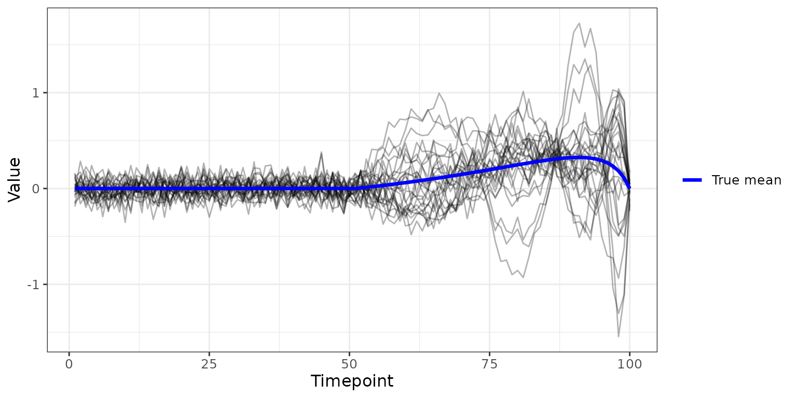
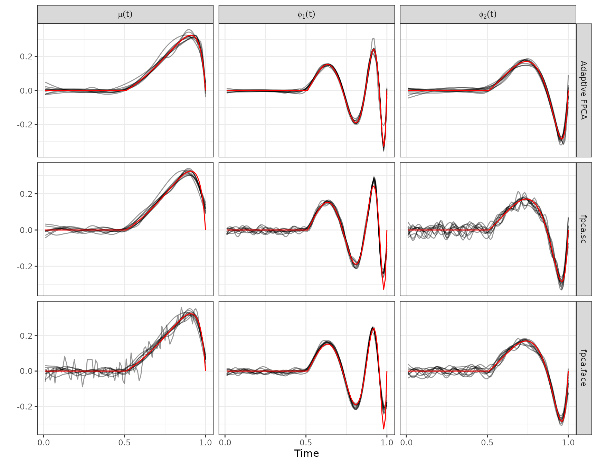
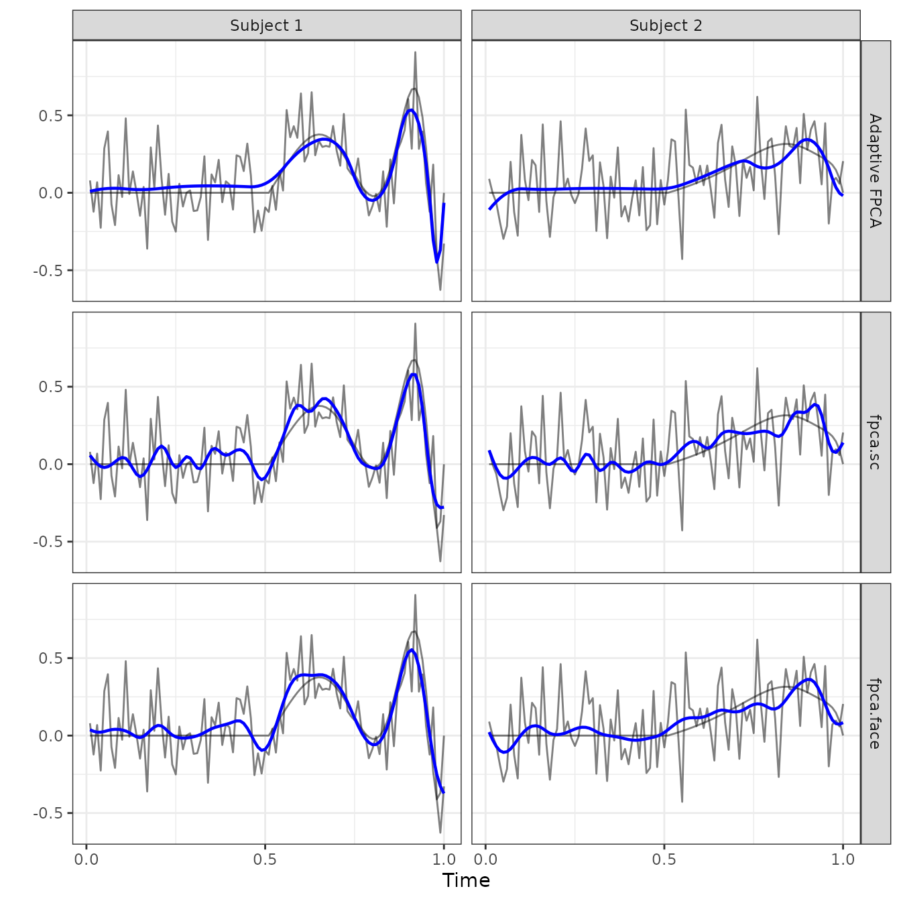
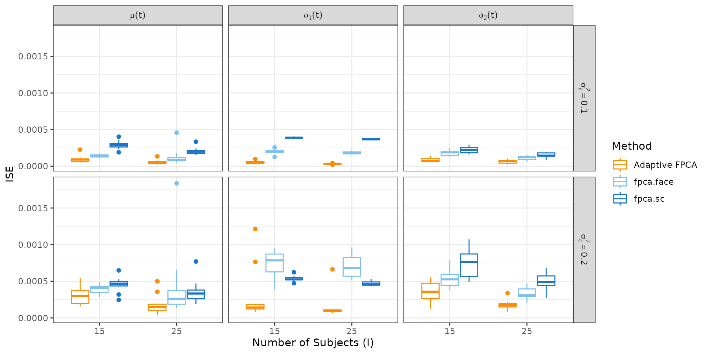
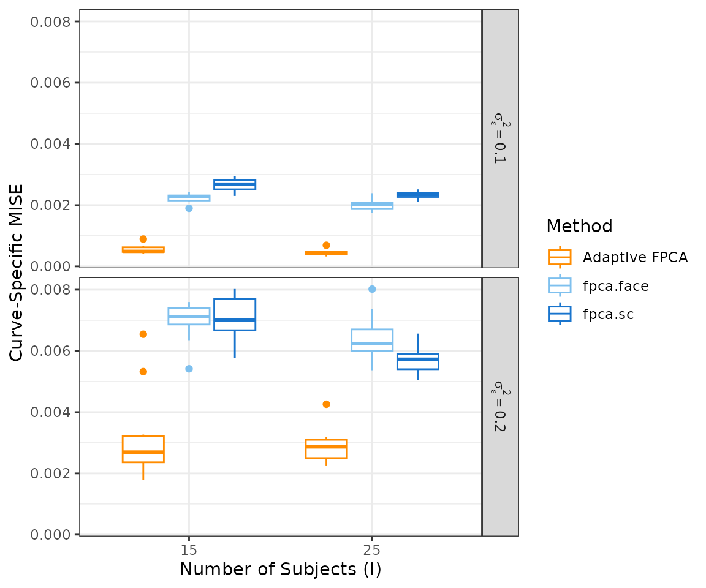
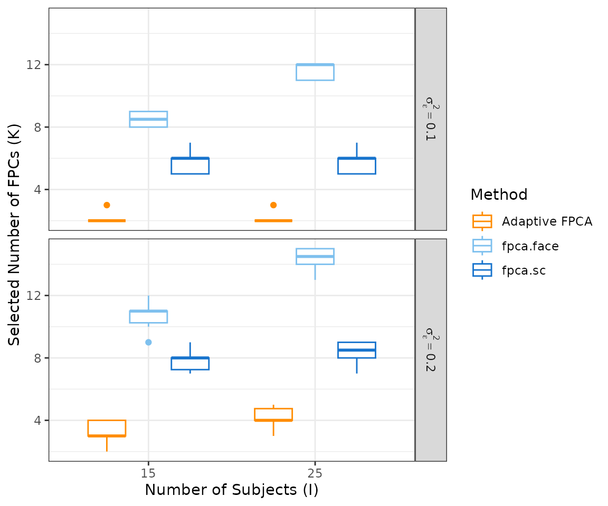

Reproducibility - Simulations
Source:vignettes/articles/reproducibility_simulations.Rmd
reproducibility_simulations.Rmdtitle: “Reproducibility - Simulations” output: rmarkdown::html_vignette vignette: > % % % editor_options: chunk_output_type: console
Overview
This vignette presents a small-scale version of the simulation study
from the paper. We compare Adaptive FPCA
(fpca.adapt) against two standard methods from the
refund package — fpca.sc and
fpca.face — across settings that vary the number of
subjects and the residual noise variance.
The full simulations in the paper used 100 replications per scenario and three sample sizes ; this vignette uses 10 replications and two sample sizes to keep runtime manageable, as the original simulations took around 8+ hours to run using 10 cores and all intermediate output was saved to monitor convergence, resulting in 2GB+ of data. The conclusions remain the same.
Note: To replicate the exact results from the paper, set
n_sim = 100,N.subj = c(25, 50, 100), andnbs = 40.
Simulated Data
The package provides
simulate_adaptive_functional_data(), which generates
functional curves with spatially heterogeneous smoothness — the setting
where Adaptive FPCA is expected to outperform standard methods. The true
data-generating process has two functional principal components built
from sinusoidal functions with varying period and amplitude.
The plot below shows one example dataset (, ).
example_data <- simulate_adaptive_functional_data(
n.tp = 100,
N.subj = 25,
noise.var = 0.1,
seed.num = 1
)
mean_df <- data.frame(
timepoint = seq_len(nrow(example_data$data)),
value = example_data$Mu_true
)
as.data.frame(example_data$data) |>
mutate(timepoint = row_number()) |>
pivot_longer(-timepoint, names_to = "subject", values_to = "value") |>
ggplot(aes(x = timepoint, y = value)) +
geom_line(aes(group = subject), colour = "black", linewidth = 0.5, alpha = 0.3) +
geom_line(data = mean_df, aes(colour = "True mean"), linewidth = 1.2) +
scale_colour_manual(values = c("True mean" = "blue")) +
labs(x = "Timepoint", y = "Value", colour = NULL) +
theme_bw() +
theme(text = element_text(size = 12))
Simulation
Setup
We vary two factors:
- Number of subjects
- Noise variance
For each scenario we run n_sim = 10 independent
replications. In each replication we simulate data, fit all three
models, and record:
- ISE (Integrated Squared Error) for the estimated mean and first two FPCs.
- Curve-specific MISE (Mean ISE averaged over subjects).
- Number of FPCs selected by each method.
Since FPC signs are arbitrary, we align each estimated FPC to the true FPC before computing ISE. We also store the full estimated functions from the scenario , to produce Figure 2.
# ── Helpers ───────────────────────────────────────────────────────────────────
align_sign <- function(est, true) if (sum(est * true) < 0) -est else est
ise <- function(est, true) sum((est - true)^2) / length(true)
# ── Settings ──────────────────────────────────────────────────────────────────
sim_grid <- expand.grid(
N.subj = c(15, 25),
noise.var = c(0.1, 0.2)
)
n_sim <- 10
n.tp <- 100
nbs <- 30
argvals <- seq(0, 1, length.out = n.tp)
timepoints <- seq_len(n.tp) / 100
method_colors <- c("Adaptive FPCA" = "darkorange",
"fpca.face" = "skyblue2",
"fpca.sc" = "dodgerblue3")
# Storage for summary metrics (all scenarios)
all_results <- vector("list", nrow(sim_grid))
# Storage for full function estimates (Figure 2 scenario only)
fig2_N.subj <- 25
fig2_noise.var <- 0.2
fig2_runs <- vector("list", n_sim)
# ── Run simulations ───────────────────────────────────────────────────────────
for (j in seq_len(nrow(sim_grid))) {
N.subj <- sim_grid$N.subj[j]
noise.var <- sim_grid$noise.var[j]
is_fig2 <- (N.subj == fig2_N.subj & noise.var == fig2_noise.var)
scenario_results <- vector("list", n_sim)
for (s in seq_len(n_sim)) {
sim_data <- simulate_adaptive_functional_data(
n.tp = n.tp,
N.subj = N.subj,
noise.var = noise.var,
seed.num = s
)
# Fit models
fit_adapt <- fpca.adapt(data = sim_data, nbs = nbs, n.comp = 10, pve = 0.99)
fit_sc <- fpca.sc(Y = t(sim_data$data), nbasis = nbs)
fit_face <- fpca.face(Y = t(sim_data$data), argvals = argvals)
# Align FPC signs to truth
a_fpc1 <- align_sign(fit_adapt$fpcs[, 1], sim_data$Phi_true[, 1])
a_fpc2 <- align_sign(fit_adapt$fpcs[, 2], sim_data$Phi_true[, 2])
# Rescale fpca.sc efunctions to match continuous L2 norm before aligning
sc_efun <- qr.Q(qr(fit_sc$efunctions))
s_fpc1 <- align_sign(sc_efun[, 1], sim_data$Phi_true[, 1])
s_fpc2 <- align_sign(sc_efun[, 2], sim_data$Phi_true[, 2])
#
f_fpc1 <- align_sign(fit_face$efunctions[, 1], sim_data$Phi_true[, 1])
f_fpc2 <- align_sign(fit_face$efunctions[, 2], sim_data$Phi_true[, 2])
# Curve-specific MISE
adapt_subj <- mean(sapply(seq_len(N.subj), function(i)
ise(fit_adapt$Y_hat[, i], sim_data$data_true[, i])))
sc_subj <- mean(sapply(seq_len(N.subj), function(i)
ise(t(fit_sc$Yhat)[, i], sim_data$data_true[, i])))
face_subj <- mean(sapply(seq_len(N.subj), function(i)
ise(t(fit_face$Yhat)[, i], sim_data$data_true[, i])))
# Summary metrics
scenario_results[[s]] <- tibble(
sim = s,
N.subj = N.subj,
noise.var = noise.var,
`Adaptive FPCA_Mean` = ise(fit_adapt$mean, sim_data$Mu_true),
`Adaptive FPCA_FPC 1` = ise(a_fpc1, sim_data$Phi_true[, 1]),
`Adaptive FPCA_FPC 2` = ise(a_fpc2, sim_data$Phi_true[, 2]),
`fpca.sc_Mean` = ise(fit_sc$mu, sim_data$Mu_true),
`fpca.sc_FPC 1` = ise(s_fpc1, sim_data$Phi_true[, 1]),
`fpca.sc_FPC 2` = ise(s_fpc2, sim_data$Phi_true[, 2]),
`fpca.face_Mean` = ise(fit_face$mu, sim_data$Mu_true),
`fpca.face_FPC 1` = ise(f_fpc1, sim_data$Phi_true[, 1]),
`fpca.face_FPC 2` = ise(f_fpc2, sim_data$Phi_true[, 2]),
`Adaptive FPCA_Subject` = adapt_subj,
`fpca.sc_Subject` = sc_subj,
`fpca.face_Subject` = face_subj,
adapt_nfpc = ncol(fit_adapt$fpcs),
sc_nfpc = ncol(fit_sc$efunctions),
face_nfpc = ncol(fit_face$efunctions)
)
# Store full function estimates for Figure 2 scenario
if (is_fig2) {
fig2_runs[[s]] <- list(
sim = s,
Y = sim_data$data,
data_true = sim_data$data_true,
Mu_true = sim_data$Mu_true,
Phi_true = sim_data$Phi_true,
adapt_mean = fit_adapt$mean, adapt_fpc1 = a_fpc1, adapt_fpc2 = a_fpc2,
adapt_Yhat = fit_adapt$Y_hat,
sc_mean = fit_sc$mu, sc_fpc1 = s_fpc1, sc_fpc2 = s_fpc2,
sc_Yhat = t(fit_sc$Yhat),
face_mean = fit_face$mu, face_fpc1 = f_fpc1, face_fpc2 = f_fpc2,
face_Yhat = t(fit_face$Yhat)
)
}
}
all_results[[j]] <- bind_rows(scenario_results)
message("Scenario ", j, " / ", nrow(sim_grid), " complete")
}
all_results <- bind_rows(all_results)Figure 2: Estimation Detail (, )
Figure 2 zooms into a single scenario to examine estimation quality in detail:
- Panel A shows the estimated mean and FPCs across all replications (black, semi-transparent) overlaid with the truth (red).
- Panel B shows observed data (grey), the true underlying curve (dark grey), and each method’s fitted curve for two representative subjects.
Panel A: Estimated Functions Across Replications
make_functions_df <- function(run) {
bind_rows(
data.frame(index = timepoints, value = run$adapt_mean,
component = "Mean", method = "Adaptive FPCA", sim = run$sim),
data.frame(index = timepoints, value = run$adapt_fpc1,
component = "FPC 1", method = "Adaptive FPCA", sim = run$sim),
data.frame(index = timepoints, value = run$adapt_fpc2,
component = "FPC 2", method = "Adaptive FPCA", sim = run$sim),
data.frame(index = timepoints, value = run$sc_mean,
component = "Mean", method = "fpca.sc", sim = run$sim),
data.frame(index = timepoints, value = run$sc_fpc1,
component = "FPC 1", method = "fpca.sc", sim = run$sim),
data.frame(index = timepoints, value = run$sc_fpc2,
component = "FPC 2", method = "fpca.sc", sim = run$sim),
data.frame(index = timepoints, value = run$face_mean,
component = "Mean", method = "fpca.face", sim = run$sim),
data.frame(index = timepoints, value = run$face_fpc1,
component = "FPC 1", method = "fpca.face", sim = run$sim),
data.frame(index = timepoints, value = run$face_fpc2,
component = "FPC 2", method = "fpca.face", sim = run$sim)
)
}
panelA_est <- bind_rows(lapply(fig2_runs, make_functions_df)) |>
mutate(
method = factor(method, levels = c("Adaptive FPCA", "fpca.sc", "fpca.face")),
component = factor(component, levels = c("Mean", "FPC 1", "FPC 2"),
labels = c(expression(mu(t)),
expression(phi[1](t)),
expression(phi[2](t))))
)
ref_run <- fig2_runs[[1]]
panelA_true <- expand.grid(
method = c("Adaptive FPCA", "fpca.sc", "fpca.face"),
component = c("Mean", "FPC 1", "FPC 2"),
stringsAsFactors = FALSE
) |>
rowwise() |>
mutate(data = list(data.frame(
index = timepoints,
value = switch(component,
"Mean" = ref_run$Mu_true,
"FPC 1" = ref_run$Phi_true[, 1],
"FPC 2" = ref_run$Phi_true[, 2])
))) |>
unnest(data) |>
mutate(
method = factor(method, levels = c("Adaptive FPCA", "fpca.sc", "fpca.face")),
component = factor(component, levels = c("Mean", "FPC 1", "FPC 2"),
labels = c(expression(mu(t)),
expression(phi[1](t)),
expression(phi[2](t))))
)
figure2_panelA <- panelA_est |>
ggplot(aes(x = index, y = value)) +
geom_line(aes(group = sim), colour = "black", alpha = 0.4, linewidth = 0.5) +
geom_line(data = panelA_true, colour = "red", linewidth = 0.5) +
facet_grid(method ~ component, scales = "free_y",
labeller = labeller(component = label_parsed, method = label_value)) +
scale_x_continuous(breaks = c(0, 0.5, 1)) +
labs(x = "Time", y = "") +
theme_bw() +
theme(text = element_text(size = 11))
figure2_panelA
Panel B: Observed vs. Fitted for Two Subjects
run <- fig2_runs[[1]]
subj_idx <- c(1, 2)
make_subject_df <- function(idx, label, run) {
bind_rows(
data.frame(index = timepoints, value = run$Y[, idx],
type = "Observed", method = "Adaptive FPCA"),
data.frame(index = timepoints, value = run$data_true[, idx],
type = "True", method = "Adaptive FPCA"),
data.frame(index = timepoints, value = run$Y[, idx],
type = "Observed", method = "fpca.sc"),
data.frame(index = timepoints, value = run$data_true[, idx],
type = "True", method = "fpca.sc"),
data.frame(index = timepoints, value = run$Y[, idx],
type = "Observed", method = "fpca.face"),
data.frame(index = timepoints, value = run$data_true[, idx],
type = "True", method = "fpca.face"),
data.frame(index = timepoints, value = run$adapt_Yhat[, idx],
type = "Fitted", method = "Adaptive FPCA"),
data.frame(index = timepoints, value = run$sc_Yhat[, idx],
type = "Fitted", method = "fpca.sc"),
data.frame(index = timepoints, value = run$face_Yhat[, idx],
type = "Fitted", method = "fpca.face")
) |> mutate(subject = label)
}
panelB_data <- bind_rows(
make_subject_df(subj_idx[1], "Subject 1", run),
make_subject_df(subj_idx[2], "Subject 2", run)
) |>
mutate(method = factor(method,
levels = c("Adaptive FPCA", "fpca.sc", "fpca.face")))
figure2_panelB <- panelB_data |>
ggplot(aes(x = index, y = value)) +
geom_line(data = \(d) filter(d, type != "Fitted"),
aes(group = type), colour = "black", alpha = 0.5) +
geom_line(data = \(d) filter(d, type == "Fitted"),
colour = "blue", linewidth = 0.8) +
facet_grid(method ~ subject, scales = "free_y") +
scale_x_continuous(breaks = c(0, 0.5, 1)) +
labs(x = "Time", y = "", colour = "Method") +
theme_bw() +
theme(text = element_text(size = 11), legend.position = "none")
figure2_panelB
Figure 3: ISE and Reconstruction Quality
Figure 3 summarises estimation accuracy across all simulation scenarios.
- Panel A shows ISE for the mean and first two FPCs.
- Panel B shows curve-specific MISE.
- Panel C shows the number of FPCs selected by each method.
Panel A: ISE for Mean and FPCs
ise_long <- all_results |>
select(sim, N.subj, noise.var,
starts_with("Adaptive FPCA_"),
starts_with("fpca.sc_"),
starts_with("fpca.face_")) |>
pivot_longer(
cols = -c(sim, N.subj, noise.var),
names_to = c("method", "type"),
names_sep = "_"
) |>
filter(type != "Subject") |>
mutate(
N.subj = as.factor(N.subj),
noise.var = factor(noise.var,
labels = c(expression(sigma[epsilon]^2 == 0.1),
expression(sigma[epsilon]^2 == 0.2))),
type = factor(type, levels = c("Mean", "FPC 1", "FPC 2"),
labels = c(expression(mu(t)),
expression(phi[1](t)),
expression(phi[2](t))))
)
figure1_panelA <- ise_long |>
ggplot(aes(x = N.subj, y = value, colour = method)) +
geom_boxplot() +
facet_grid(noise.var ~ type, labeller = label_parsed) +
scale_colour_manual(values = method_colors) +
labs(x = "Number of Subjects (I)", y = "ISE", colour = "Method") +
theme_bw() +
theme(text = element_text(size = 11))
figure1_panelA
Panel B: Curve-Specific MISE
mise_long <- all_results |>
select(sim, N.subj, noise.var,
`Adaptive FPCA_Subject`, `fpca.sc_Subject`, `fpca.face_Subject`) |>
pivot_longer(
cols = -c(sim, N.subj, noise.var),
names_to = c("method", "type"),
names_sep = "_"
) |>
mutate(
N.subj = as.factor(N.subj),
noise.var = factor(noise.var,
labels = c(expression(sigma[epsilon]^2 == 0.1),
expression(sigma[epsilon]^2 == 0.2)))
)
figure1_panelB <- mise_long |>
ggplot(aes(x = N.subj, y = value, colour = method)) +
geom_boxplot() +
facet_grid(noise.var ~ ., labeller = label_parsed) +
scale_colour_manual(values = method_colors) +
labs(x = "Number of Subjects (I)", y = "Curve-Specific MISE", colour = "Method") +
theme_bw() +
theme(text = element_text(size = 11))
figure1_panelB
Panel C: Number of FPCs Selected
nfpc_long <- all_results |>
select(sim, N.subj, noise.var, adapt_nfpc, sc_nfpc, face_nfpc) |>
pivot_longer(
cols = c(adapt_nfpc, sc_nfpc, face_nfpc),
names_to = "method",
values_to = "n_fpc"
) |>
mutate(
N.subj = as.factor(N.subj),
method = recode(method, "adapt_nfpc" = "Adaptive FPCA",
"sc_nfpc" = "fpca.sc",
"face_nfpc" = "fpca.face"),
noise.var = factor(noise.var,
labels = c(expression(sigma[epsilon]^2 == 0.1),
expression(sigma[epsilon]^2 == 0.2)))
)
figure1_panelC <- nfpc_long |>
ggplot(aes(x = N.subj, y = n_fpc, colour = method)) +
geom_boxplot() +
facet_grid(noise.var ~ ., labeller = label_parsed) +
scale_colour_manual(values = method_colors) +
labs(x = "Number of Subjects (I)", y = "Selected Number of FPCs (K)",
colour = "Method") +
theme_bw() +
theme(text = element_text(size = 11))
figure1_panelC